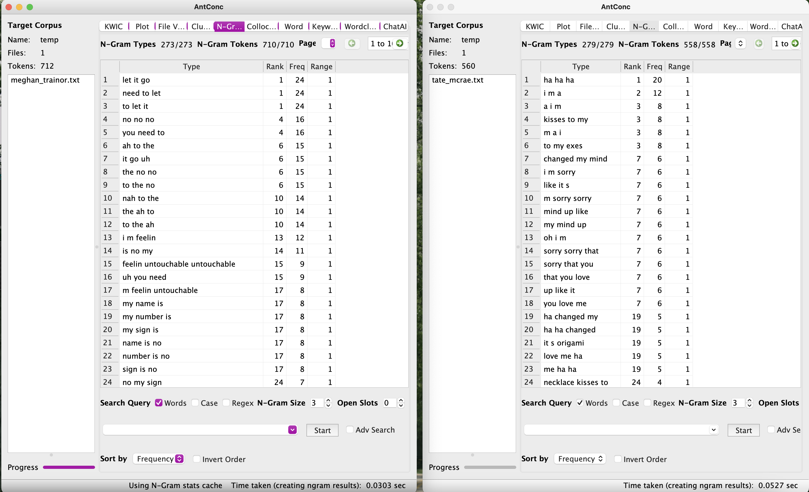
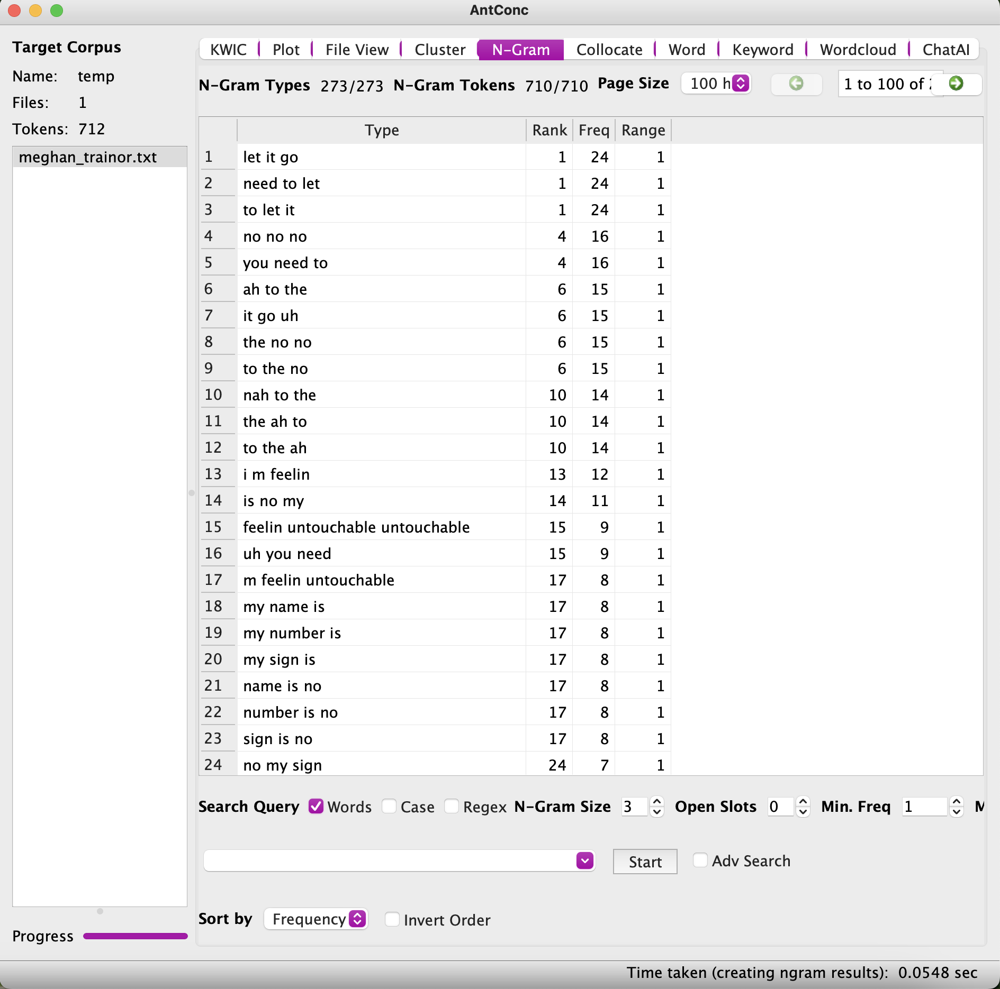

This song is called "Exes" from Tate McRae.
This song is called "Sucker" from the Jonas Brothers.
This song is called "Bloody Mary" from Lady Gaga.
This song is called "Talk" from Why Don't We.
AntConc Tools

Comparing Meghan Trianor with Tate McRae songs on AntConc at 3 N-Grams.

Three-grams showing "let it go" as the most popular cluster
in this Meghan Trainor song. Three-grams showing "ha ha ha" as the most popular cluster
in this Tate McRae song. Three-grams showing "don t listen" as the most popular cluster
in this Why Don't We song.